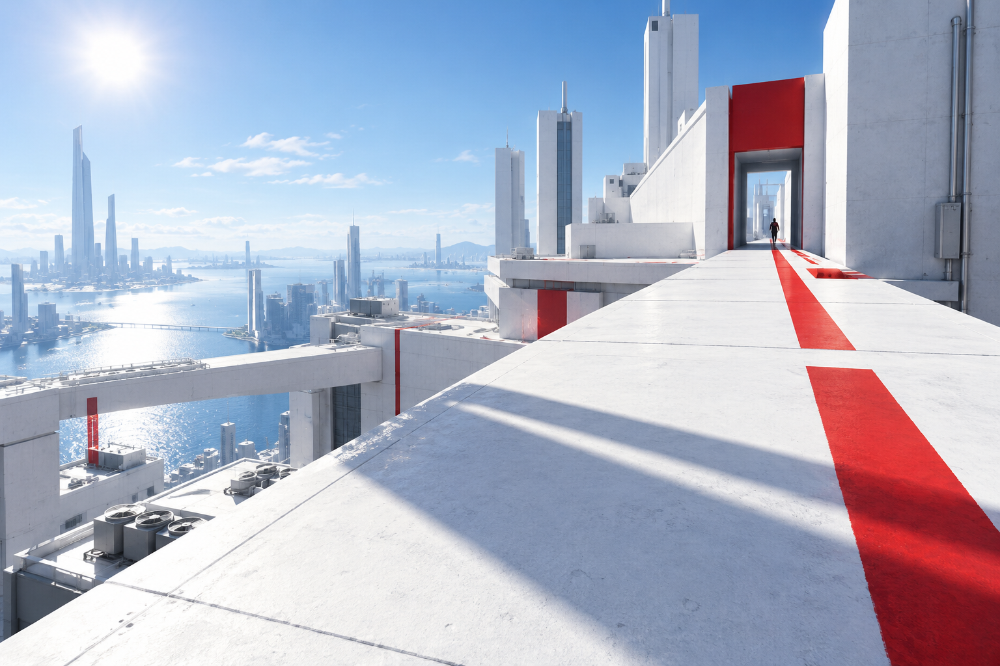

North Relay Courier
- 1Reach the relay door
- 2Carry the sealed packet
- 3Leave by the east stair
Route note
Use the upper path in this invented scenario.
Use the upper path in this invented scenario.
Demo data · not an original mission

Original Mirror’s Edge scope / experimental visual direction
Let the architecture stay visible. A route diagram offers choice, a brief holds longer intent, and the movement cue gives one next action.
The line does the work; notes stay secondary.
Choose a line to preview it.
Longer intent belongs on a calm, separate surface.
Demo data · not an original mission
Brief is unaccepted.
One transient cue leaves the central view open.
Cue ready. The key label is invented for this page.